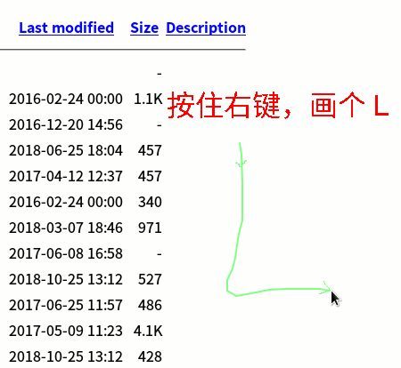

第5课 学会设置手势
0、学会设置火狐主页和安装手势插件；
1、新标签，右上角，三道杠，点开找到“首选项”；
2、在中间找到主页文本框，输入 10.0.5.101 ，下边出来选短的，
输完找到右上角，小房子主页按钮，点击回空间主页；
3、点“软件下载 - Linux”，左键点击一下 fireguestures
4、依次点击 Allow - install - restart now ，单词很简单，前面见过；
5、稍等数上3秒，重新打开浏览器，按住右键，在空白处画一个 L 关闭；

6、加上三个新标签，右键画 L 关上几次练熟，以后就用手势关闭标签；
本节学习了的基础知识，如果你成功地完成了练习，请继续学习下一课内容；
返回目录 下一课
本教程由TeliuTe制作|著作权所有
基础教程网：http://teliute.org/
美丽的校园……
转载和引用本站内容，请保留作者和本站链接。